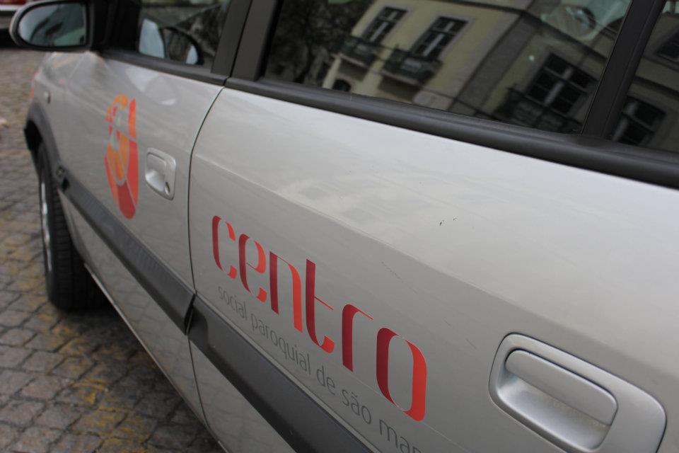

|
|
|
|
|
O Serviço de Apoio Domiciliário (SAD) é uma resposta social que consiste na prestação de cuidados individualizados e personalizados no domicílio, a indivíduos e famílias quando, por motivo de doença, deficiência ou outro impedimento, não possam assegurar temporária ou permanentemente, a satisfação das suas necessidades á e/ou as atividades da vida diária.
O Serviço de Apoio Domiciliário assegura a prestação dos seguintes serviços: fornecimento e apoio nas refeições, respeitando as dietas com prescrição médica; cuidados de higiene e de conforto pessoal; tratamento de roupas; arrumação e pequenas limpezas no domicílio; atividades de animação e socialização, designadamente, animação, lazer, cultura, aquisição de bens e géneros alimentícios, pagamento de serviços, deslocação a entidades da comunidade.
O Serviço de Apoio Domiciliário realiza ainda as seguintes atividades: acompanhamento a consultas assim como aos exames complementares de diagnóstico; apoio Psicossocial; pequenas reparações no domicílio, transporte.
|  |